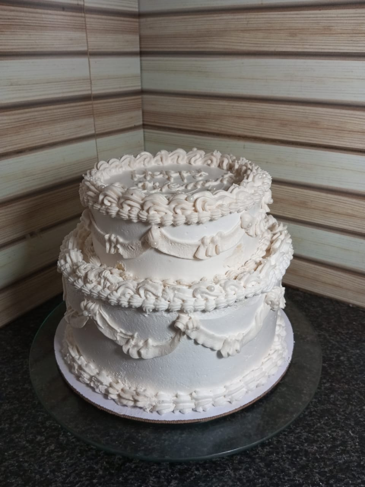
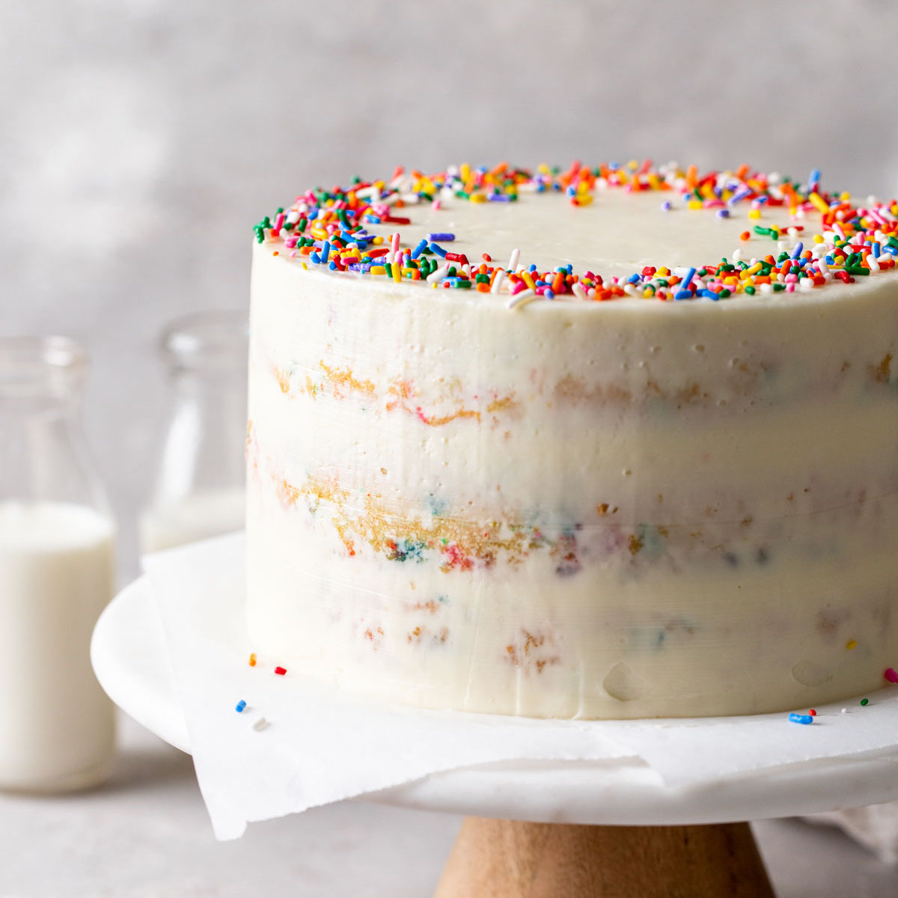

Two-tier Lotus Cake
Indulge in our best seller—a decadent two-tier Lotus cake, perfect for any celebration! This luxurious dessert is lined with our special lotus ganache ensuring each bite is a heavenly experience. Weighing five pounds, this cake is customizable in size and effortlessly serves 35 to 40 people.
The design of your cake can be fully personalized to match your unique style. Our featured design is a vintage masterpiece: a light covering adorned with intricate vintage piping and topped with elegant pearls. This cake is sure to be the highlight of your event, offering both a stunning appearance and an unforgettable taste. Order now and treat your guests to a slice of pure delight!
Our Classic Vanilla Sponge Cake is a timeless treat that delights all ages. This cake features layers of soft, fluffy vanilla sponge, generously filled and frosted with smooth and creamy vanilla cream. The classic vanilla flavor is a crowd-pleaser, and the light, airy texture makes every bite melt in your mouth. Customize this cake to your liking, or enjoy it as is for a pure, sweet indulgence that never goes out of style. Order our Classic Vanilla Sponge Cake today and savor the simplicity of a true classic!

Indulge in the ultimate chocolate experience with this decadent, rich chocolate cake. Each layer is infused with velvety, smooth chocolate, creating a moist and dense texture that melts in your mouth. Topped with a silky dark chocolate ganache, this cake is a perfect blend of bold cocoa flavors and subtle sweetness. The deep, luxurious flavor is heightened by a delicate hint of espresso, bringing out the richness of the chocolate.
Treat yourself to our exquisite Lotus Biscoff Cake, a delightful fusion of flavors and textures that will captivate your taste buds. This cake features layers of moist and fluffy vanilla sponge, expertly combined with the irresistible taste of Lotus Biscoff spread and crushed Biscoff cookies. Each layer is generously filled and frosted with a creamy Biscoff-infused buttercream, creating a harmonious blend of sweetness and spice.
The cake is elegantly decorated with a drizzle of Biscoff spread, a sprinkle of crushed cookies, and whole Lotus Biscoff biscuits on top for an eye-catching finish. Perfect for any occasion, this cake offers a unique and indulgent treat that will impress your guests and leave them craving more. Order our Lotus Biscoff Cake today and experience the rich, caramelized flavor that makes this dessert truly unforgettable!
Our Red Velvet Cake is a true classic, known for its striking red color and velvety texture. Each bite offers a subtle hint of cocoa, perfectly balanced with a rich and tangy cream cheese frosting. This elegant cake is a showstopper at any event, making it an ideal choice for celebrations that require a touch of sophistication. Order our Red Velvet Cake today and enjoy its unique blend of flavors and beautiful presentation.

Brighten your day with our refreshing Lemon Cake. This delightful cake features layers of light and fluffy lemon-infused sponge, complemented by a tangy lemon curd filling and a smooth lemon buttercream frosting. Perfect for those who love a zesty and citrusy treat, our Lemon Cake is a vibrant addition to any dessert table. Order now and indulge in the fresh, invigorating taste of lemons.
Experience the warmth and comfort of our Pineapple Cake, a moist and flavorful treat that's packed with freshly choppes pineapples. Topped with fresh whipped cream, this cake is both wholesome and indulgent. Ideal for any occasion, our pineapple Cake brings a touch of homemade goodness to your celebrations. Order now and savor the rich, comforting flavors.

Celebrate with our delightful Strawberry Shortcake, featuring layers of light and airy vanilla sponge, fresh strawberries, and whipped cream. This cake is a perfect blend of sweetness and freshness, making it a favorite for spring and summer gatherings. Its simple yet elegant design is sure to impress, providing a refreshing and delicious treat. Order our Strawberry Shortcake today and enjoy the taste of summer all year round.
For coffee lovers, our Coffee and Walnut Cake is a dream come true. This rich and flavorful cake is infused with the robust taste of coffee and complemented by crunchy walnut pieces. Topped with a smooth coffee buttercream frosting, this cake offers a perfect balance of flavors and textures. Ideal for afternoon tea or any coffee-themed event, order our Coffee and Walnut Cake for a truly satisfying experience.

Bring the party to your taste buds with our Funfetti Cake! This festive cake features a light vanilla sponge filled with rainbow sprinkles, creating a burst of color in every slice. Frosted with a creamy vanilla buttercream, it's perfect for birthdays, celebrations, and any occasion that calls for a bit of fun. Order our Funfetti Cake and let the celebrations begin!
Indulge in the decadence of our Salted Caramel Cake, a rich and flavorful treat that combines sweet and salty in perfect harmony. Layers of moist sponge are filled with a salted caramel buttercream and drizzled with homemade salted caramel sauce. This cake is a gourmet delight, perfect for those who love a sophisticated and indulgent dessert. Order now and experience the luxurious taste of salted caramel.
Transport your taste buds to a tropical paradise with our Coconut Cake. This cake features a coconut-flavored sponge and creamy coconut frosting, topped with a generous sprinkle of shredded coconut. Light and refreshing, it's perfect for any occasion that calls for a taste of the tropics. Order our Coconut Cake today and enjoy a slice of island bliss.

Indulge in our Date Cake, crafted with the natural sweetness and rich texture of dates. This moist and flavorful cake is made with finely chopped dates, which lend a wonderful chewiness and depth of flavor. Enhanced with a touch of warm spices, such as cinnamon and nutmeg, each bite is a delightful experience of comforting sweetness.
Topped with a light glaze or a sprinkle of nuts, our Date Cake is a wholesome and elegant choice for any occasion. Perfect as a treat for yourself or a thoughtful gift, it combines a classic taste with a touch of sophistication. Order now and enjoy a cake that's both satisfying and deliciously unique!